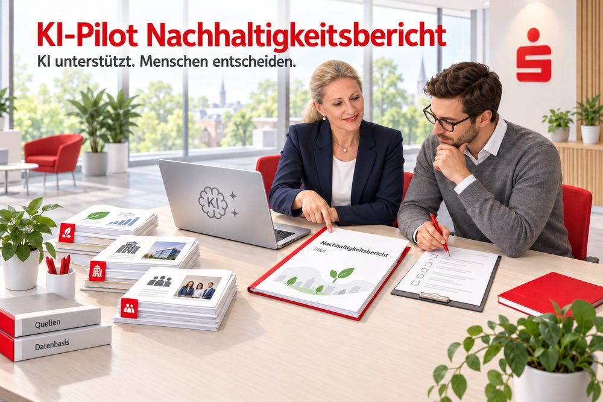
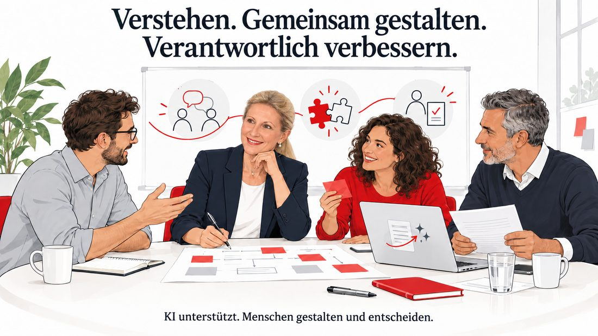
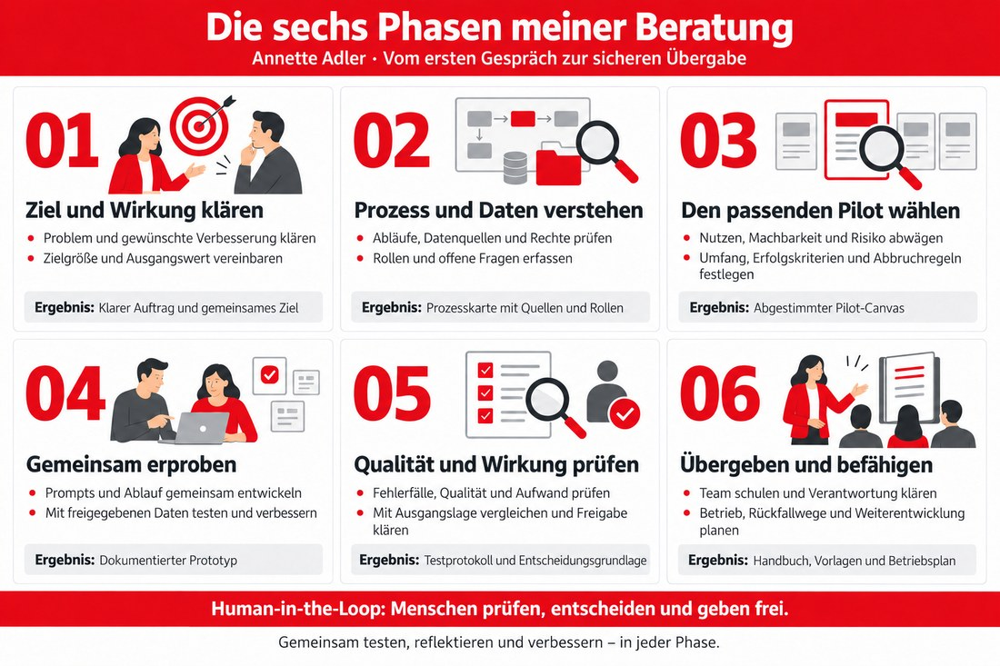
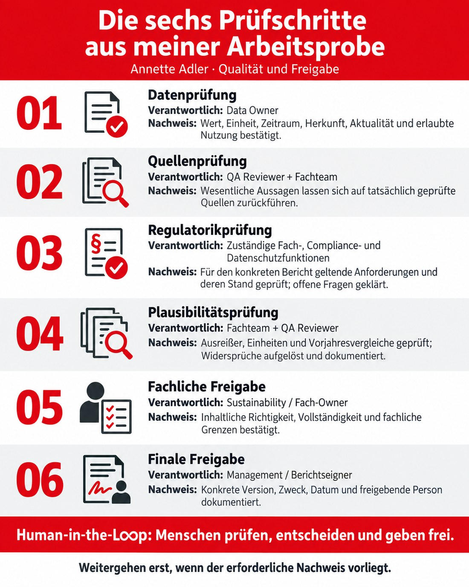
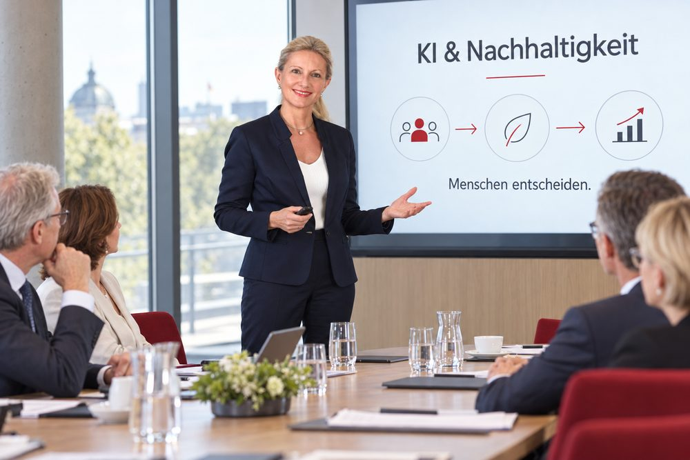
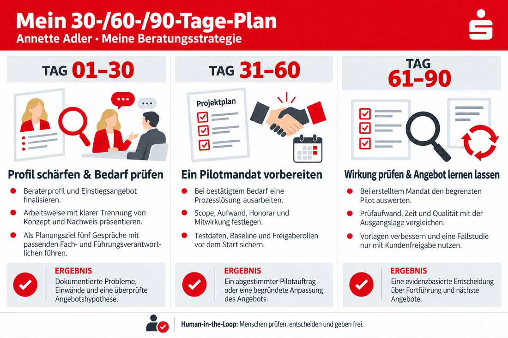
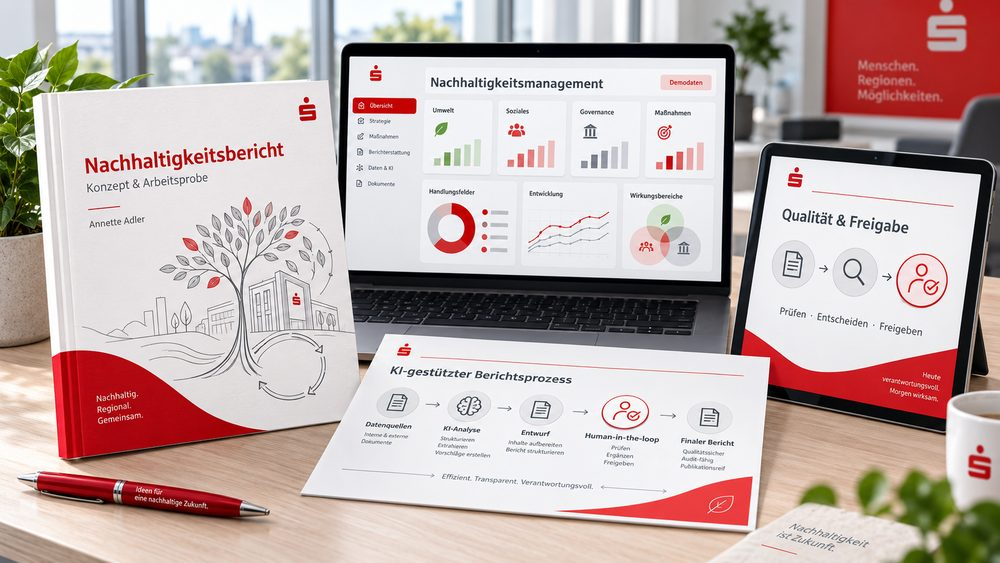

Nachhaltigkeit
& Berichte
Daten und Aussagen zu einem nachvollziehbaren Ganzen verbinden.
Ich unterstütze Banken, Sparkassen und Verbände dabei, Nachhaltigkeits- und Berichtsprozesse zu verbessern – mit KI, nachvollziehbaren Quellen und menschlicher Verantwortung.

Daten und Aussagen zu einem nachvollziehbaren Ganzen verbinden.
Verlässliche Quellen erschließen und verständlich aufbereiten.
Prüfschritte und klare Freigaben im Prozess verankern.
Teams beteiligen, gemeinsam erproben und Wissen weitergeben.
Sechs Phasen – jede führt zu einem konkreten Ergebnis. Wähle einen Schritt.
Wir machen das Problem greifbar und vereinbaren, woran eine Verbesserung erkennbar ist.
Ergebnis: Ein klarer Auftrag mit Zielgröße und Ausgangswert.
Menschliche Entscheidung: Sponsor und Fachbereich bestätigen das Ziel.
Strukturieren
Entwürfe vorbereiten
Auffälligkeiten markieren
Kontext bewerten
Widersprüche klären
Freigeben oder stoppen
Kritischer Fehler oder fehlende Pflichtfreigabe? Zurück zur Korrektur. Kein automatisches Veröffentlichen.
Wo entlastet KI wirklich? Wir betrachten Prozess, Daten und drei mögliche Anwendungsfälle.
Wir erproben einen begrenzten Ablauf mit freigegebenen Daten, Testfällen und menschlichem Review.
Wir üben mit dem Team, dokumentieren den Ablauf und klären den laufenden Betrieb.
Arbeitsprobe vorstellen, Fachgespräche führen und das Einstiegsangebot prüfen.
Bei bestätigtem Bedarf Umfang, Daten, Ausgangswerte und Verantwortung vereinbaren.
Bei erteiltem Mandat Qualität und Gesamtaufwand vergleichen. Daraus das Angebot weiterentwickeln.
Reale Einsparungen und produktive Ergebnisse werden erst im Pilot nachgewiesen. Die QA-Beispielwerte sind keine Kundenergebnisse.
Mein Schwerpunkt liegt dort, wo verlässliche Informationen, viele Beteiligte und verantwortliche Entscheidungen zusammenkommen.
Ich unterstütze Verantwortliche in Banken, Sparkassen und Verbänden dabei, aufwendige Nachhaltigkeits- und Berichtsprozesse mit KI zu entlasten. Ich verbinde Fach- und Prozessanalyse mit kontrollierten Workflows, überprüfbaren Quellen und menschlichen Freigaben. Meine Arbeitsprobe macht diese Herangehensweise konkret.
Vorstände, Führungskräfte und Verantwortliche für Nachhaltigkeit, Berichtswesen und Unternehmenskommunikation.
Verteilte Daten, wiederkehrende Recherche, Medienbrüche und lange Abstimmungen erschweren konsistente Berichte und Entscheidungsvorlagen.
Weniger manuelle Aufbereitung, nachvollziehbare Aussagen und klarere Zuständigkeiten sind meine Zielgrößen.

Daten und Quellen strukturieren, Berichtsteile vorbereiten, Kennzahlen nachvollziehbar darstellen und fachliche Prüfung organisieren.
Freigegebene Wissensbestände erschließen, Prompts und Arbeitsabläufe entwickeln sowie Informationen für Führung und Gremien verständlich aufbereiten.
Rollen, Testfälle, Prüfschritte und Freigaben in den Prozess integrieren. Offene Fragen und Grenzen bleiben sichtbar.
Menschen an ihren echten Aufgaben beteiligen. Verständliche Anleitung, gemeinsame Erprobung und Feedback machen neue Arbeitsweisen nutzbar.
Ich kenne die Aufbereitung von Informationen für Vorstand und Gremien sowie die Koordination von Nachhaltigkeitsberichten aus meiner Berufspraxis. Diese Erfahrung verbinde ich mit KI-Kompetenz und einer Arbeitsweise, die Fachbereiche, Technik und Führung zusammenbringt.
Meine Beratung beginnt mit Menschen, ihrem Arbeitsalltag und dem Ergebnis, das sie erreichen wollen.

„KI soll Freiraum für fachliche Qualität und gute Entscheidungen schaffen. Ich gestalte den Weg gemeinsam mit den Menschen, die später damit arbeiten und Verantwortung tragen.“
Ich kläre Problem, Zielgruppe und erwartete Wirkung, bevor wir Werkzeuge auswählen. Auch eine einfachere Prozessverbesserung kann die richtige Lösung sein.
Ich betrachte Daten, Prozesse, Systeme, Zusammenarbeit und Verantwortung gemeinsam. Eine Verbesserung muss in den tatsächlichen Arbeitsablauf passen.
Ein überschaubarer Berichtsteil wird zum Lernraum: verstehen, entwerfen, testen, reflektieren und verbessern. Erkenntnisse fließen in die nächste Version ein.
Ich trenne Fakten, Annahmen und offene Punkte. Erfolg wird an vereinbarten Kriterien gemessen; fehlende Daten werden als Lücke ausgewiesen.
Prüfende erhalten Quellen, Zeit und Eingriffsmöglichkeiten. Sie können Rückfragen stellen, korrigieren, ablehnen und einen Prozess stoppen.
Ich dokumentiere Entscheidungen und befähige Teams, den Ablauf selbst weiterzuführen. Nachhaltigkeit bedeutet für mich auch dauerhaft nutzbare Fähigkeiten.
Vertrauen · Verantwortung · Wertschätzung · Verlässlichkeit · Gemeinwohl · Lernbereitschaft
Drei aufeinander aufbauende Module. Umfang, Mitwirkung und Abnahme werden vor dem Start schriftlich vereinbart.
Für: Verantwortliche mit einem konkreten Engpass im Berichts- oder Wissensprozess.
Mein BeitragInterviews, Prozessaufnahme, Daten- und Rollenklärung; drei Use-Case-Optionen nach Nutzen, Machbarkeit und Risiko vergleichen.
ErgebnisProzessbild, Ausgangsmessung, priorisierte Optionen und begründete Pilotempfehlung.
AbnahmeProblem, Zielgröße, Sponsor, Datenzugang und Pilotgrenzen sind gemeinsam bestätigt.
Für: Teams, die KI an einer abgegrenzten, realen Aufgabe prüfen möchten.
Mein BeitragPilot-Canvas, Quellenstruktur, Prompt- und Workflow-Konzept, Prototyp, Testfälle und moderierte Auswertung.
ErgebnisGeprüfter Entwurf, Testprotokoll, Vorher-nachher-Vergleich und dokumentierte Go-/Anpassen-/Stop-Empfehlung.
AbnahmeVereinbarte Qualitätsziele sind nachgewiesen; Pflichtfreigaben und offene Grenzen sind dokumentiert.
Für: Teams, deren Pilot die fachlichen und organisatorischen Anforderungen erfüllt.
Mein BeitragArbeitsanweisungen, Rollenmodell, Praxisschulungen, Monitoring-Konzept und Übergabe begleiten.
ErgebnisTeam-Handbuch, wiederverwendbare Vorlagen und abgestimmter Plan für den weiteren Betrieb.
AbnahmeDas Team kann den Ablauf selbst durchführen; Betrieb, Eskalation und Überprüfung sind zugeordnet.
Beispielsweise ein Kapitel zu Ressourcen und Emissionen: vom freigegebenen Datensatz bis zum fachlich geprüften Textentwurf. Zunächst mit bereitgestellten Daten und einem klar begrenzten Testbestand.
Fachlicher Owner, freigegebene Quellen und Testdaten, Ausgangswerte, Zeit für Review sowie Ansprechpersonen aus IT, Compliance und Datenschutz.
Produktive Schnittstellen, vollständige Berichtserstellung und laufender Betrieb benötigen einen gesonderten Umfang. Technische Umsetzung und Spezialprüfungen koordiniere ich mit zuständigen Fachpersonen.
Mein Blueprint verbindet die KI-Einführungsblaupause mit meiner Fachpraxis und dem prüfbaren Berichtsprozess der Arbeitsprobe.

Ich höre zu, beobachte den bestehenden Ablauf und formuliere mit Sponsor und Fachteam das Problem. Wir benennen Entscheider, Nutzer, Zielgrößen und Nicht-Ziele.
Auftragsklärung, Stakeholderbild und Ausgangsmessung: etwa Zeitaufwand je Berichtsteil, Abstimmungsschleifen und Anteil belegter Aussagen.
Ich mache Übergaben, Medienbrüche, Datenherkunft und Prüfaufgaben sichtbar. Mit den Zuständigen kläre ich Zugriffsrechte, sensible Daten und organisatorische Voraussetzungen.
Prozesskarte, Quelleninventar, Rollenübersicht und Liste der Daten- und Risikolücken. Vorhandene Arbeitsmittel werden berücksichtigt.
Wir vergleichen Quellenrecherche, Kennzahlenaufbereitung und einen Berichtsentwurf. Nutzen, Machbarkeit und Risiko werden jeweils begründet; unbekannte Werte bleiben offen.
Pilot-Canvas mit Umfang, Daten, Nutzenhypothese, Risiken, Verantwortlichen, Erfolgskriterien und Abbruchregeln. Werkzeuge werden passend zu dieser Aufgabe ausgewählt.
Ich entwerfe mit dem Fachteam Prompts und Prozessschritte. Freigegebene Daten speisen einen Entwurf mit Quellenbezug. Rückfragen und Korrekturen werden in Versionen dokumentiert.
Ein begrenzter Prototyp, Prompt-Bibliothek, versionierte Beispielausgaben und eine Liste der beobachteten Fehler und Verbesserungen.
Wir prüfen Normal-, Grenz- und Fehlerfälle: vollständige Daten, fehlende Monate, Quellenwidersprüche, falsche Einheiten und manipulative Anweisungen. Fehler führen zu Korrektur und erneutem Test.
Testprotokoll, sechs QA-Gates, Vorher-nachher-Vergleich und dokumentierte Restgrenzen. Der Gesamtaufwand umfasst auch menschliche Prüfung und Nacharbeit.
Ich übe den Ablauf mit den späteren Nutzern, dokumentiere Rollen und Rückfallwege und vereinbare regelmäßige Reviews. Neue Datenquellen oder Modellversionen lösen gezielte Nachtests aus.
Handbuch, Vorlagen, Schulungsnachweis, Betriebs- und Monitoring-Plan. Erst nach belegtem Nutzen folgt der nächste Berichtsteil oder Anwendungsfall.
Das vereinbarte Ergebnis liegt vor, Quellen und Versionen sind nachvollziehbar, Tests und Pflichtprüfungen sind bestanden, Restgrenzen sind dokumentiert und die zuständigen Menschen haben die Nutzung freigegeben. Für die Übergabe ist zusätzlich nachgewiesen, dass das Team den Prozess durchführen kann.
Human-in-the-Loop bedeutet für mich: Menschen setzen Ziele, prüfen an definierten Stellen und entscheiden über Nutzung und Freigabe.
Informationen strukturieren, Entwürfe aus freigegebenen Quellen vorbereiten, Vergleichsprüfungen unterstützen und Auffälligkeiten zur Prüfung markieren.
Daten und Kontext bewerten, Widersprüche klären, fachlich urteilen, Risiken abwägen und Ergebnisse ausdrücklich freigeben oder zurückweisen.

| Prüfschritt | Verantwortliche Rolle | Nachweis vor dem Weitergehen |
|---|---|---|
| 1 · Datenprüfung | Data Owner | Wert, Einheit, Zeitraum, Herkunft, Aktualität und erlaubte Nutzung bestätigt. |
| 2 · Quellenprüfung | QA Reviewer + Fachteam | Wesentliche Aussagen lassen sich auf tatsächlich geprüfte Quellen zurückführen. |
| 3 · Regulatorikprüfung | Zuständige Fach-, Compliance- und Datenschutzfunktionen | Für den konkreten Bericht geltende Anforderungen und deren Stand geprüft; offene Fragen geklärt. |
| 4 · Plausibilitätsprüfung | Fachteam + QA Reviewer | Ausreißer, Einheiten und Vorjahresvergleiche geprüft; Widersprüche aufgelöst und dokumentiert. |
| 5 · Fachliche Freigabe | Sustainability / Fach-Owner | Inhaltliche Richtigkeit, Vollständigkeit und fachliche Grenzen bestätigt. |
| 6 · Finale Freigabe | Management / Berichtseigner | Konkrete Version, Zweck, Datum und freigebende Person dokumentiert. |
Fehlt eine wesentliche Quelle, ist eine kritische Zahl falsch oder eine Pflichtfreigabe offen, geht das Ergebnis zurück in die Bearbeitung. Es folgen Korrektur und erneute Prüfung. Bei Störungen steht ein manueller Rückfallweg bereit.
Prüfende sehen Ausgabe und Originalquelle nebeneinander, erhalten angemessene Prüfzeit und dürfen die KI-Empfehlung ablehnen. Änderungen, Gründe und Freigaben werden protokolliert. Ein Process Owner hält Ablauf, Berechtigungen sowie Prompt- und Modellversionen aktuell. Ich konzipiere und moderiere diese Zusammenarbeit; die fachliche und finale Freigabe bleibt beim Auftraggeber.
Strategieentwurf für meine Beratung: Fachpraxis als Ausgangspunkt, ein konkretes Einstiegsangebot und ein wachsendes Portfolio geprüfter Arbeitsproben.
Ich beginne mit Nachhaltigkeits- und Berichtsprozessen, deren Anforderungen und Abstimmungswege ich aus der Praxis kenne. Auftraggeber spreche ich über ein konkretes Prozessproblem an.
Meine beruflichen Kontakte, Fachgespräche und gezielt vorgestellte Portfolio-Beispiele bilden den Einstieg. Im Gespräch prüfe ich Bedarf, Entscheidungskompetenz und Mitwirkung.
Größte Nähe zu meiner Fachpraxis und zur Arbeitsprobe. Der Pilot verbindet Daten, Text, Quellen und Freigaben in einem klar begrenzten Ablauf.
Ein freigegebener Quellenbestand unterstützt wiederkehrende Fachfragen. Voraussetzung sind geklärte Nutzungsrechte, Aktualisierung und prüfbare Antworten.
Strukturierte Informationen werden zu nachvollziehbaren Entscheidungsvorlagen. Vertraulichkeit und menschliche redaktionelle Prüfung prägen den Umfang.


Qualität der Bedarfsgespräche, klar abgegrenzte Aufträge, nachvollziehbar abgenommene Ergebnisse, Nettoentlastung einschließlich Review und Nacharbeit sowie die Fähigkeit des Teams, eigenständig weiterzuarbeiten. Expansion in andere Branchen folgt erst, wenn sich die Methode im Schwerpunkt bewährt.
KI-gestützte Nachhaltigkeitsberichterstattung: von verstreuten Informationen zu einem strukturierten, nachvollziehbaren und menschlich geprüften Ergebnis.
Die redaktionelle Darstellung mit Jahresauswahl zeigt, wie ich Kennzahlen und Fachinformationen verständlich zugänglich mache.
Methodik ansehen ↗Prüfkriterien, Testfälle, sechs QA-Gates und menschliche Rollen verbinden Ergebnisqualität mit kontrolliertem Vorgehen.
Profil ansehen ↗Vorstandsstab, Unternehmenskommunikation und Nachhaltigkeitsberichterstattung sowie die dokumentierte KI-Weiterbildung bilden mein fachliches Fundament.

Eine nachvollziehbare konzeptionelle und redaktionelle Ausarbeitung: Daten darstellen, Berichtsprozesse strukturieren, Qualität operationalisieren und menschliche Verantwortung in den Ablauf einbauen.
Produktive Datenanbindung, tatsächliche Zeitersparnis, Fehlerreduktion und Alltagstauglichkeit. Die beispielhaften Scores, PASS-Angaben und Freigaben im QA-Blueprint sind Konzeptwerte und keine nachgewiesenen Kundenergebnisse.
Denselben abgegrenzten Berichtsteil mit und ohne KI bearbeiten, Gesamtzeit einschließlich Prüfung erfassen und die Ergebnisse gegen identische Qualitätskriterien testen. Testbestand, Versionen, Fehler und menschliche Freigaben werden dokumentiert.
Diese Seite beschreibt mein persönliches Beratungsangebot. Sie ist keine offizielle Darstellung oder Beauftragung durch die genannten Institute.
Ein konkreter Prozess ist der beste Ausgangspunkt für unser Gespräch.